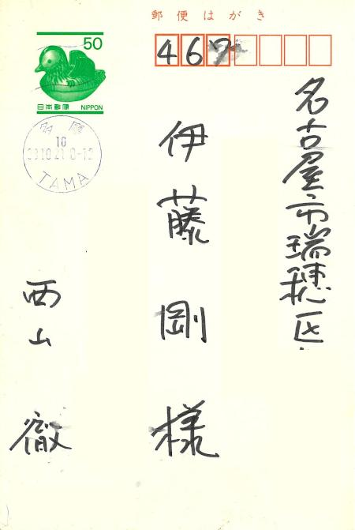
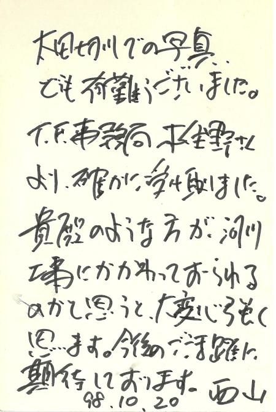

コラム
レポート「太田切川フィッシングフェスタ '98」
1998年9月12日（土）～13日（日）にかけて、長野県駒ヶ根市・宮田村にある太田切川において、太田切川フィッシングフェスタ '98が開催されました。
今回のコラムでは、このイベントの模様をリポートした過去の記事を再掲します。今後の渓流釣り場を考えてゆく上でのなにがしかの参考になれば幸いです。
写真集 太田切川フィッシングフェスタ '98も参考にしてください。
さらに、フェスタのパンフレットはこちらをどうぞ。


あらまし
このフィッシングフェスタは、地元のフライフィッシャーマンが集まって、太田切川にもキャッチアンドリリース区間を創りたい、できたらいいね。 という想いから始まったそうです。
この話が駒ヶ根市の商工観光課にも伝わり、観光の振興、地元の活性化、全国への情報発信という狙いもあって、釣り人と自治体との協力体制が出来上がったのです。
こうした動きの中で、地元の天竜川漁業協同組合に向けて、特定管理釣り場の設定：Ｃ＆Ｒ区間設定の要望が出されたのですが、漁協内部で議論がわき起こり、当面の実施は難しいという回答だったのですが、組合長さんの理解もあってイベントとして開催するのであれば、漁協からの協力は可能であるということになりました。
そこで、釣り人有志の発起人代表 佐藤さんが、企画書を書いて里見栄正さんに協力をお願いし、釣り場での実釣、アドバイスを里見さんが行うワンポイントレッスン＋釣り大会→フィッシングフェスタ '98という形で実現したわけです。
最初に話が持ち上がってから、約１年半ほどの粘り強い取り組みで今回の実現に至っているそうです。
こうして、地元のフライフィッシャーマンを中心とした実行委員会が主催し、駒ヶ根市、宮田村、天竜川漁協が共催、そして河川改修を通じて太田切川と関係の深い建設省天竜川上流工事事務所が後援するというイベントが開催される運びとなりました。
さらに、地元の観光・産業界、そして各地の釣具店、スポーツ用品店などにより強力なバックアップがあり、トラウトフォーラムからも様々な形で協力・支援が行われています。
太田切川の様子
太田切川は、中央アルプス駒ヶ岳から流れ出して天竜川に合流する非常に急峻な河川であり、与田切川などと並んで暴れ川として有名であり、洪水の時には遠くからでも巨大な岩が流されてぶつかり合うズシン！、ゴゴーン！などという轟音が聞こえるそうです。
そのため、古くから河川改修が進められ、最近では多自然型の川づくりの取り組みとして、自然石を張り込んだ護岸や、すでにできあがっていた砂防ダムを、自然の流れのようになだらかにして魚が上り下りできるように工夫されています。
また、今回の会場となったこまくさ橋～駒ヶ根橋の周辺では、観光施設、吊り橋、芝生広場、駐車場、キャンプ場など充実した施設が整っています。
このような周辺環境・設備の充実が、今回のイベントの会場として太田切川が選定された大きな理由のようです。
当日の様子
私が会場に到着した午前１０時半過ぎには、開会式が終わって、参加者のみなさんが広大な太田切川の河原に散らばり、めいめいのポイントを見つけて釣りを始めたところでした。
１２日に行われたフィッシングフェスタの参加人数は約１５０人、ほとんどがフライフィッシャーです。これだけの釣り人が楽しめるだけの懐の深さと、仰ぎ見る駒ヶ岳の山容、そして身を切る水の清冽さが太田切川の魅力です。
そして、この流れに群れなして泳ぐ野生のアマゴやイワナを育てようというのが今回のフェスタの試みなんだと実感しました。
参加者は２０代から３０代の男性が多く、最近フライフィッシングを始めたと思われる方もたくさん見受けられ、男女のペアも幾組か見られました。遠くは群馬、栃木、三重方面からの参加者もあり、約７割が県外からの参加だそうです。
また、太田切川は遠方からのアクセスという点でも恵まれています。中央自動車道の駒ヶ根インターチェンジから10分ほどで釣り場に着くのですから。
講師として参加された里見栄正さん、西山徹さんもそれぞれ狙いをつけたポイントで、参加者のみなさんと談笑しながらにこやかに、かつ真剣に、得意のパターンをキャストしていました。里見さんのワンポイントレッスンでは、実際の流れを前にして、マンツーマンでアドバイスを受けることができたので、大勢の参加者が熱心に聞き入っていました。
このフィッシングフェスタの原動力となった地元有志のフライフィッシャー、そして駒ヶ根市・宮田村の職員、地元の観光や産業に携わっているみなさんで構成されるスタッフの方々は、企画や様々な調整、イベントの準備と当日の忙しいスケジュールの運営、後片づけと、まさにがっちりとスクラムを組んで今回のイベントが動いているんだなと感心しました。
フィッシングフェスタ当日も昼時となり、参加者のみなさんもぼちぼちと会場本部周辺で昼食をとり始めました。中にはお昼も忘れて釣りを続ける人もいます。
講師の里見さん、西山さんも本部テントに戻ってみえて、食事をとりながら四方山話が始まりました。
地元有志発起人の佐藤さん、天竜川漁協の高坂組合長、トラウトフォーラムの木住野さんらがテーブルを囲み、釣り場をめぐる環境問題、餌釣りとフライ・ルアーの共存、アマゴ・アユ釣りの現状と将来、アユの冷水病の問題、護岸や魚道の整備の話、各地の漁協の動き、有料釣り場の現状など、さまざまな話題について１時間半ほどの間熱心に意見が交わされ、とても有意義な話を聞くことができました。
午後２時頃になり、里見さん、西山さんともに再び太田切川へ向かい、第二ラウンドが始まります。 午後には参加者もだいぶ散らばり、午前中のざわめきも無くなって魚も落ちついたのか、あちらこちらでロッドが曲がり、歓声が聞こえてきます。
大きな堰堤の日陰で横になって粘る人（笑）、落ち込みの白泡をロングキャストで狙う人、地味で小さなポイントを拾い歩く人、それぞれの楽しみ方でこの一日を過ごしたようでした。
参加者の中には、十数匹も釣り上げたベテランの方から、仲良しの友達といっしょに参加したけど、１匹しか釣れなかった若者など、釣果はさまざまでした。しかし、いずれのみなさんも、秋晴れの中、太田切川のフライフィッシングを大いに満喫されたようです。
延長約３キロの長い会場釣り場区間の主要ポイントでは、地元のフライフィッシャーのスタッフが椅子を置いて座り、状況の把握と事故に対処するために終日待機していました。
懇談会のようす
いよいよ初日のワンポイントレッスンも一段落し、近くの地元酒造メーカー本坊酒造（株）さんのイベントスペースにおいて、懇談会となりました。
芝生にテントがいくつも張られ、木製のテーブルにイス、ランタンが落ちついた光を投げかけるという雰囲気の中、盛大な乾杯で幕が開き、西山さんと里見さんによる本日の感想のスピーチ（トークショー？）が始まりました。
西山さんのコメント
実は今朝東京から駆けつけまして、朝８時頃からライズが見られたので、けっこう魚はやる気あるなと期待がありました。
開始早々橋の下に入ろうとしましたら、落ち込みのポイントに３匹イワナを見つけました。しめしめと思ったのですが、報道の人が近づいてしまって逃げられちゃいました。（注：実はこの報道の人というのは私のことでして、写真を撮るのに夢中になってポイントに近づいてしまい、西山さんの貴重な３匹を追い払ってしまいました。この場を借りて、西山さんと、西山さんのヒットシーンを期待していた大勢の参加者のみなさんに、お詫びします）
でも、落ち込みで何度かキャストするとけっこう反応がある。だけど渋い。そこで夏場のイワナのセオリー通り、22番のフローティングピューパを8Xのティペットで投げるとドンぴしゃとマッチ。何匹か釣ることが出来たので面目は保てました。
釣った岩魚の胃からは、22～24番のカディスのラーバが出てきました。朝のうち大勢の釣り人が川原を歩いたので、その時に流されたラーバをイワナが食べていたようです。
太田切川は水がきれいで素晴らしいですね。周辺の護岸も整備されていていいのですが、ちょっと作り込みすぎかナという印象があります。
まあ、なんとか数匹岩魚を釣ることが出来てほっとしています。
里見さんのコメント
私は昨年このフィッシングフェスタのお話を伺って以来、佐藤さんと数回太田切川を訪れています。昨年の秋口には水生昆虫が少なかったので少し心配しましたが、この春はヒラタカゲロウやいろいろなニンフなど虫も多かったので安心し、これはイケルかなという感触を得ていました。
また、佐藤さんから提出された企画書がとてもしっかりした物だったので、感心していました。今日は、このように大勢のみなさんと一緒にフライフィッシングを楽しむことが出来てとてもうれしかったです。
ただ、今日は私が参加された皆さんにワンポイントアドバイスをするということだったのですが、ごくわずかな皆さんにしかアドバイスできなかったので申し訳なく思っています。今後の太田切川での取り組みに期待しています。
会場からの質問とそれについての回答
Ｑ：ニンフを流していたんだけど、マーカーに当たりが現れず、ピックアップしたときにイワナが食いついていたので焦った。どうして当たりがわからないのでしょうか？
Ａ：里見さん－－喰ったイワナの動作が小さいか、マーカーとニンフの間の弛みが大きすぎたのではないでしょうか？
Ａ：西山さん－－それはきっとあなたのニンフがリアルすぎて、食べた岩魚が何の不信感も抱かなかったので当たりが取れなかったのでは？（笑）
Ｑ：長野県内でフライを楽しんでいる釣り人ですが、どうして今回のイベントを太田切川で行うことにされたのですか？県内には他にもっと素晴らしい河川があると思うのですが....
Ａ：佐藤さん－－太田切川の川そのものの魅力にくわえて、周辺環境の素晴らしさ、施設の充実、他の遊びも楽しめる可能性など、遠方からおいでになった方々にも充分楽しんでいただける河川としてこの太田切川を選びました。（会場から大きな拍手）
Ｑ：イワナ・アマゴなど日本の渓魚に対する正しいリリースの方法は？
Ａ：里見さん－－私は今、加賀フィッシングエリアにいて、いろんなお客さんのリリースを見ていますが、意外と魚は丈夫だなと言う気がしています。
例えば、季節がかなり暑くなってから釣り上げた鱒を熱くなった岸辺の砂利にずり上げてとりあえずフラシに入れておき、夕方その鱒をリリースしていかれるお客さんもいます。それでもけっこう鱒は死なないようです。
Ａ：西山さん－－私は大学時代、水産の研究をしていて、奥多摩から竿で釣った岩魚などを研究室に持ち帰って水槽で活かしておきましたが、ほとんどの魚は生き残りました。このことから考えて、ハリで釣り上げたことによるダメージはそれほど無いと思います。中には飲み込まれてハリスを切っておいた魚でも生き残りましたから。
ですから、リリースする時には、できるだけすばやく、与えるダメージを少なくして放流することが大事だと思います。もし飲み込まれても、フライを無理に外そうとせずに、ティペットを切っておけば大丈夫と思います。
また、中にはどうせ死んでしまうからリリースしても無駄だという意見もありますが、十分気をつけてリリースすればほとんどの魚は生き残ると思います。
Ｑ：西山さんは日本や世界各地のいろんな魚を釣った経験が豊富だと思いますが、一番面白い魚は何ですか？
Ａ：うーん、これはどの魚も面白いです。先日も北海道でサケを10番のフライロッドで釣りまして、ものすごい引きに耐えながらふうふう言って釣り上げました。そのあとすぐにこちらに来て、太田切川の流れから３番ロッドでイワナを釣りました。どの魚も個性があり、どの魚もとても面白いですね。
Ｑ：河川の改修や工事に対する意見、注文はどんなことがありますか？
Ａ：西山さん－－やはり現在の河川改修は、治水面の機能が重視されていて、魚あるいは生き物の側からの視点が抜け落ちている気がします。例えば砂防ダムを連続的に建設するなど、魚にとって必要な形態が無視されていますので。
人間のためだけでなく、人間＋自然に必要な形態を考えてほしいと思います。同時に景観という視点も大事なので、ランドスケープとしての配慮も忘れないでほしいです。ややもすると、建設事業の場合、事業そのものをアピールするためにどうして「やりすぎ」になる傾向がありますので、周辺の風景とのバランスを配慮してほしいですね。
抽選会・オークションの様子
このあと、協賛の各企業や釣具店からバックアップしていただいた品々の抽選会が始まり、西山さん、里見さんがくじを引くたびにあちこちのテーブルから歓声と溜息がもれ、大いに盛り上がっていきます。さらに、西山・里見両氏から提供されたロッドなどの釣り具や小物、そしてフライの雑誌社からはあの島崎氏の「水生昆虫アルバム」の初版本がオークションにかけられ、気合いの入った競りの声と共に値が付けられていきました。これらの売り上げは、今後の活動資金としてあてられるそうです。
楽しい懇談会の数時間もあっと言う間に過ぎ、最後は会場一同による万歳三唱で締めくくられ、秋の気配ただよう駒ヶ根の夜に、参加者はそれぞれ帰って行き、フィッシングフェスタの初日が終わりました。
最後に
行き付けの釣具店に張られていた一枚のチラシがどうにも私の心をはなれず、仕事の関係上、太田切川の整備状況も見たかったのではるばる車を飛ばして駆けつけました。
予想をはるかに上回る数の参加者と、それぞれの立場で自分の出来ることを一所懸命に頑張っている関係者のみなさんの熱気に感動した一日でした。
案内していただいた、漁協の春日さんが、川を歩いての帰りしなに、ヒョイと身をかがめて空き缶を拾った姿と、その後ろに聳えていた駒ヶ根の頂が今も目に鮮やかに浮かびます。
後日、佐藤さんに電話で伺ったお話によると、キャッチアンドリリース区間の設定実現はかなり可能性が高そうだとのこと。来春の解禁には、もっと多くの釣り人でにぎわう太田切川になりそうです。
今回の取材に協力していただいたみなさんに、この場をもって厚く御礼を申し上げます。
また、私なりに今後の展望を考えたレポートその２を、次回更新時に載せたいと思っています。どうぞ、ご期待ください。
追記：西山徹さんからのお便り
今年、2020年のお盆休みは、コロナのおかげで部屋にこもって不要品やら昔の手紙などを整理していた。そうしたら、1998年の10月に故西山徹さんより頂いたハガキが見つかり、お人柄がよく表れた親しみやすい、丸っこい文字で書かれたお便りを感慨深く再読した。


当時僕は、建設関係の調査・設計コンサルタント会社に勤務しており、主に河川構造物や河川敷公園の設計などの仕事をしていた。それで太田切川の砂防ダムに設けられた魚道や、自然石を用いた護岸の見学・調査などを兼ねて、フィッシングフェスタを取材に行き、西山さんにも挨拶して名刺を交換させて頂いたのであった。
世界のあちこちを釣り歩いた西山さんは、今頃雲の上でどんな魚を狙っていることだろう？ ご冥福を心からお祈り申し上げます。
コラム 目次へ
サイトマップ
ホームへ
お問い合わせ